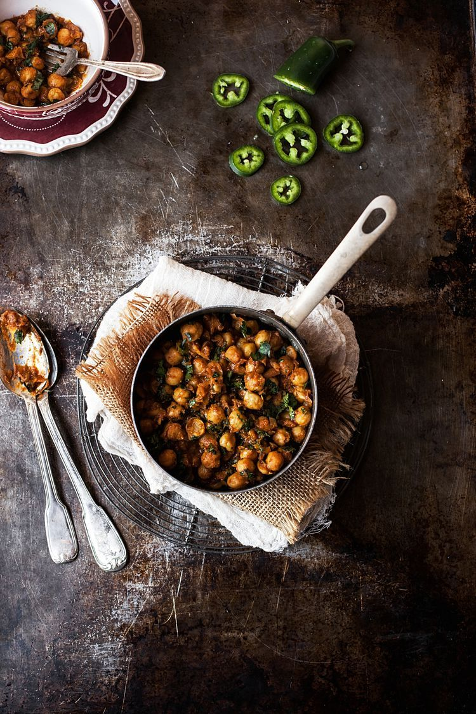
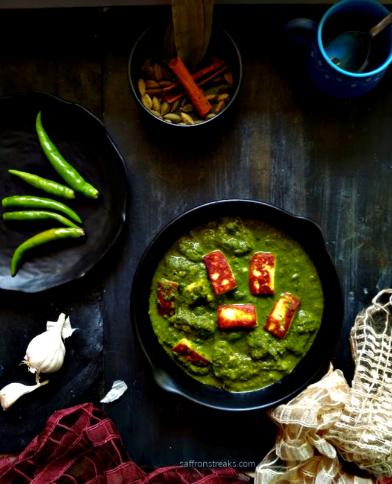
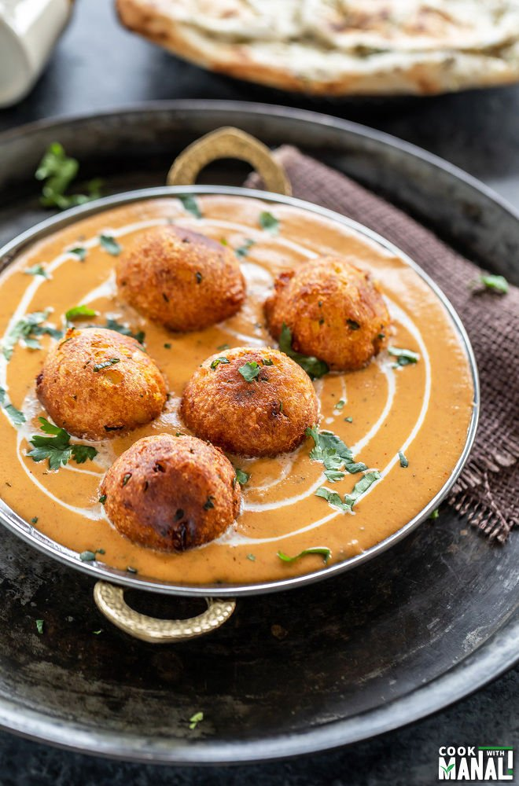
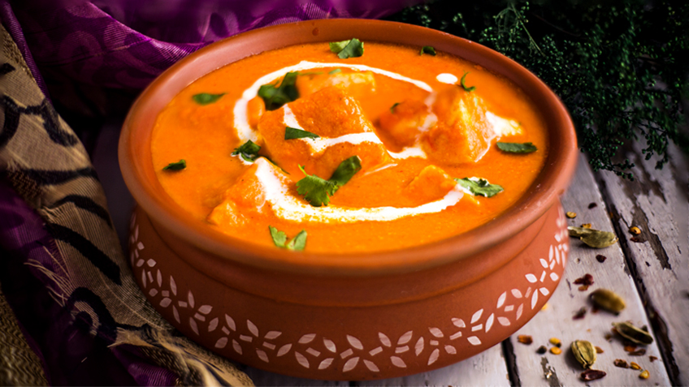
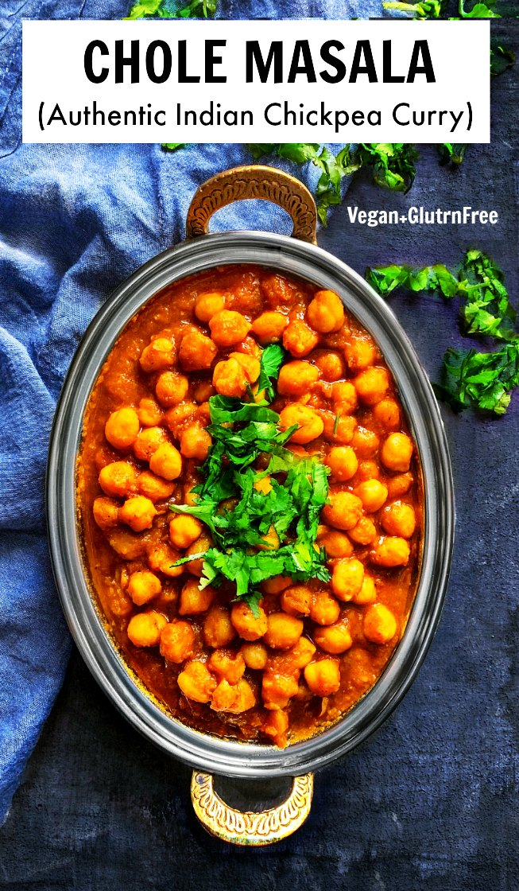
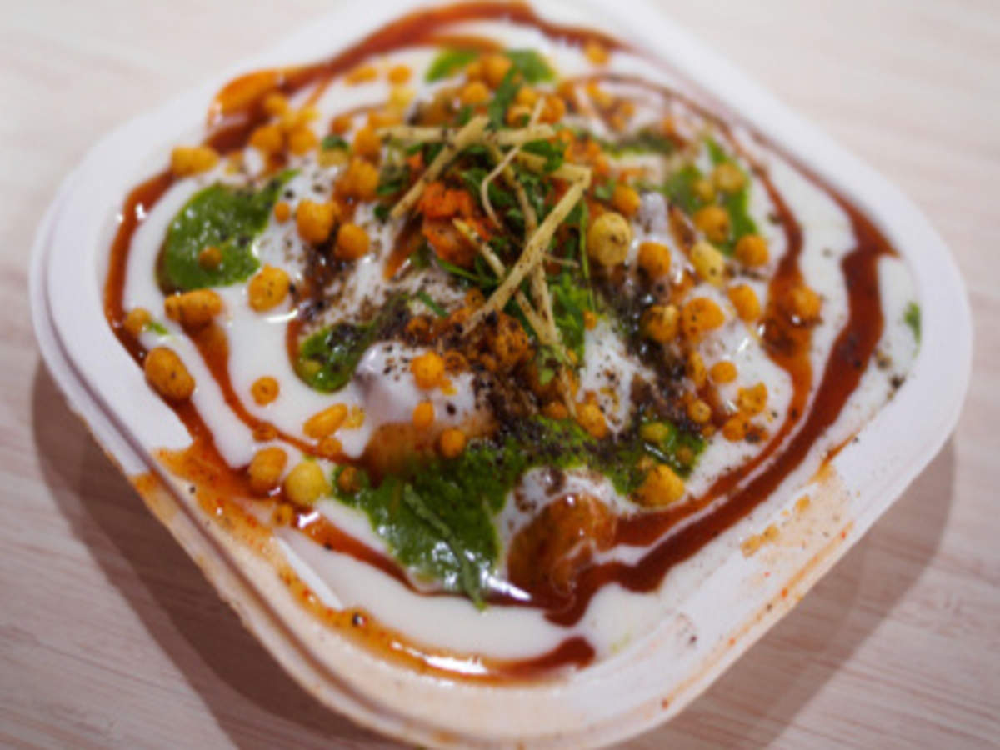
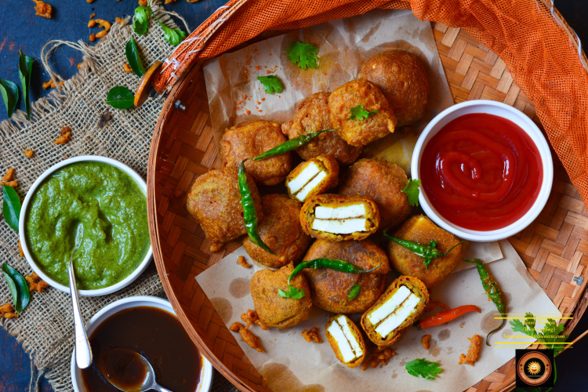
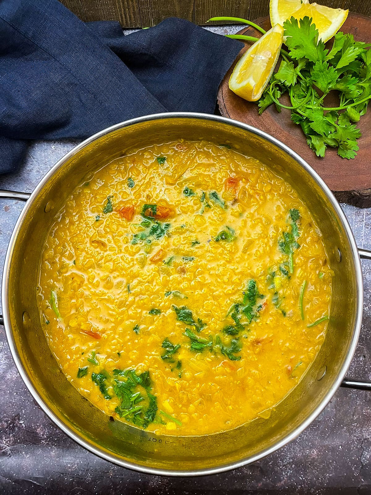
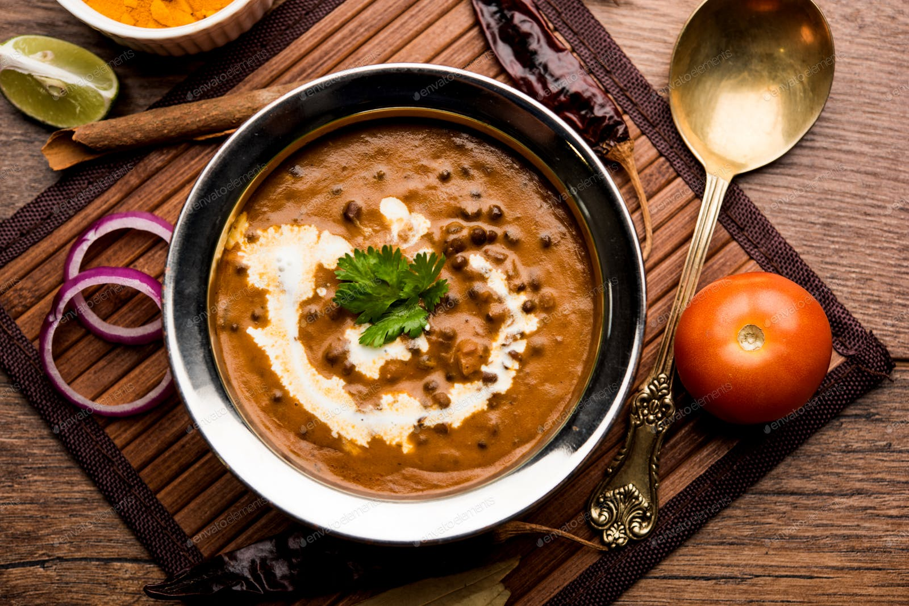
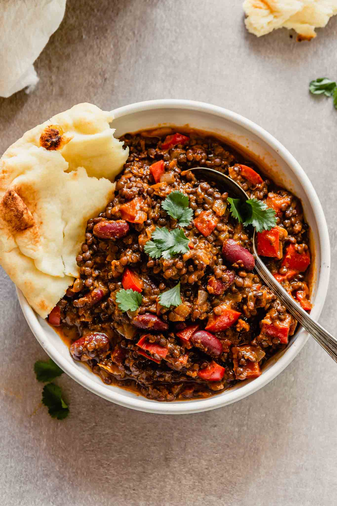

Craze in India

Indian food, with its hodgepodge of ingredients and intoxicating aromas, is coveted around the world. The labor-intensive cuisine and its mix of spices is more often than not a revelation for those who sit down to eat it for the first time. Heavy doses of cardamom, cayenne, tamarind and other flavors can overwhelm an unfamiliar palate. Together, they help form the pillars of what tastes so good to so many people.
Catch me up on Instagram @ghar_ka_swaaad
Top 10 Indian Vegetables Dishes
- Chana Masala 
- Palak Paneer 
- Malai Kofta 
- Shahi Paneer 
- Chole 
- Papdi Chaat 
- Fried Paneer Pakoda 
- Masoor Dal 
- Dal Makhni 
- Madras lentils 
Chana masala recipe – Chana masala is a delicious & flavorful Indian curry made by
cooking chickpeas in a spicy onion tomato masala gravy. It can be eaten with basmati rice,
roti, naan, poori, Bhatura and plain parathas or even with flavored rice like jeera rice or ghee
rice.
It was such a great way to sneak in the greens. They wouldn’t touch spinach otherwise but if
there was paneer with it, they would happily gulp down bowls of it.
Palak Paneer is such a staple in north India. It’s one of the most commonly made paneer
dishes in Indian homes.
I would say it was made much more frequently in my home than say paneer butter masala or
shahi paneer.
Maybe because it was considered healthier than the other creamy versions of paneer.
Whatever the reason was, we would always be very happy when mom made it!
Malai Kofta is a very popular Indian vegetarian dish where balls (kofta) made of potato and paneer are deep fried and served with a creamy and spiced tomato based curry. The literal translation of this dish is malai=creamy/buttery and kofta=spiced balls (in this case made of potatoes and paneer).
This Shahi Paneer is deliciously rich and creamy, making it one of the most popular recipes in Mughlai cuisine. Fresh, unmelting cheese is married with a creamy gravy, perfect for serving with naan or roti. “Shahi” means “royalty,” and I can promise this dish is fit for a King!
If you are looking for a warming, comforting vegetarian dish to serve for supper, look no further. Shahi Paneer is one of my very favorite dishes and is sure to become one of yours, too.
The chickpeas are cooked with Indian spices, onion-tomato paste and some coconut milk (substitute given in the recipe below), giving it a fingerpicking .
We can literally have it for lunch/dinner and sometimes even for those 2 am hunger pangs.
It’s also one of my favorite dishes when I’m looking at eating more of plant protein especially vegan/glutenfree – This checks all the boxes of taste, nutrition and ease.
Papdi chaat recipe With step by step photos. Papdi chaat is a popular North Indian street food made with papdi (fried flour crispies), boiled chickpeas, potatoes, pakoris (fried black gram fritters) and curd.
I still remember having Papdi chaat for the first time in a Punjabi restaurant in Delhi (can’t remember the restaurant’s name). It was one of the best papdi chaat I had in Delhi.
Paneer pakora are a quick evening snack that has a lovely crispy texture with a moist, soft paneer from within. Mainly made with Paneer and gram flour this delicious paneer pakoda comes together under 30 minutes and is sure to become your favorite.
Indian cuisine has a variety of pakora that is made with different vegetables or with paneer or cheese.
‘Pakora‘ or ‘pakoda‘ is the Hindi term for fried fritters. In Indian cooking, the flour that we always include to make fritters is gram flour.
Masoor Dal is a popular lentil based dish from the North Indian Cuisine and is often made in Indian homes.
The dish is made with pink lentils which are known as Masoor dal in Hindi. Pink lentils are also known as red lentils and orange lentils. Note that these are not Puy lentils.
The Masoor Dal lentils can be split or whole and both types are used in the Indian cuisine.
The split and husked lentils have an orange-pink color. The Whole Masoor Dal has a dark brown color as the husks have this color.
This Dal Makhani recipe is a restaurant style version with subtle smoky flavors and creaminess of the lentils. If you love authentic Punjabi food then you are going to love this Dal Makhani even more.
Dal Makhani is one of the most popular lentil recipes from the North Indian Punjabi cuisine made with Whole Black Lentils (known as Urad dal or Kaali Dal in Hindi) and Kidney Beans (known as Rajma in Hindi).
While you really can’t beat one-step-one-minute convenience, you CAN make a huge batch for really cheap in just a few hours at home.
Don’t be put off by the time it takes to make this madras lentils recipe. Out of the two hours total, only about 20 minutes is active time.
There’s lots of simmering action, so feel free to go about your day while your house starts to smell completely amazing.